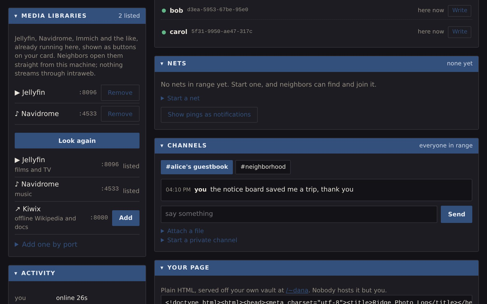
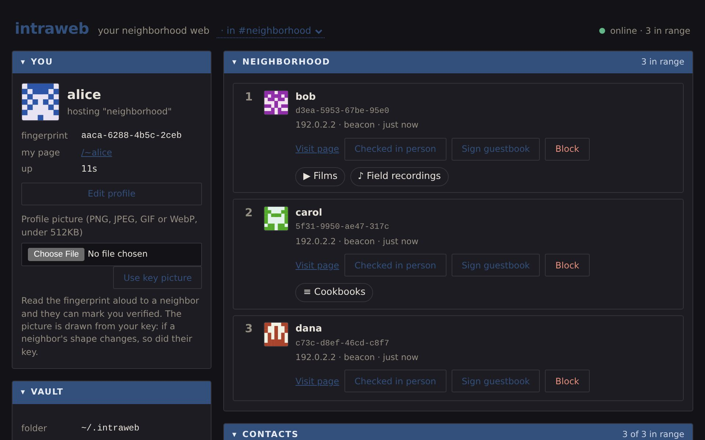
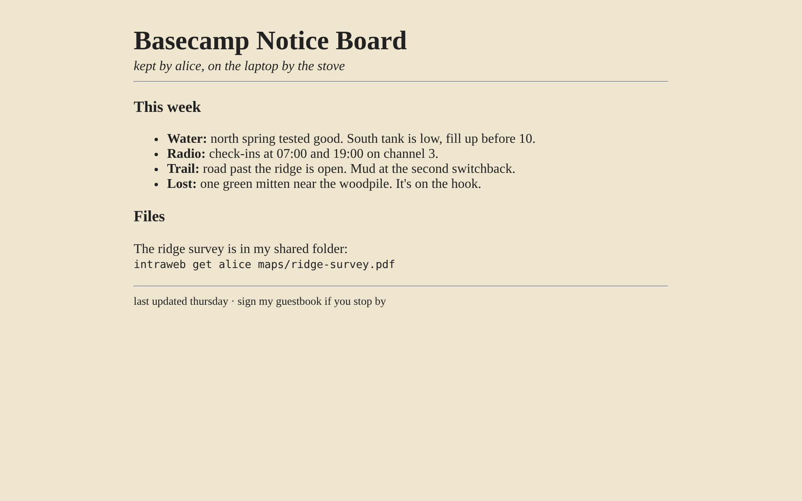
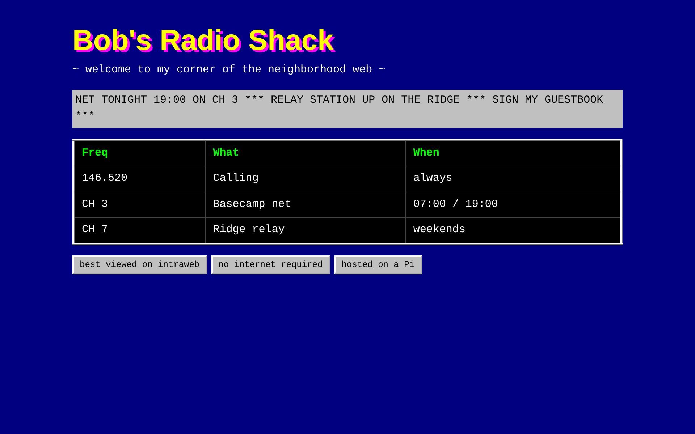
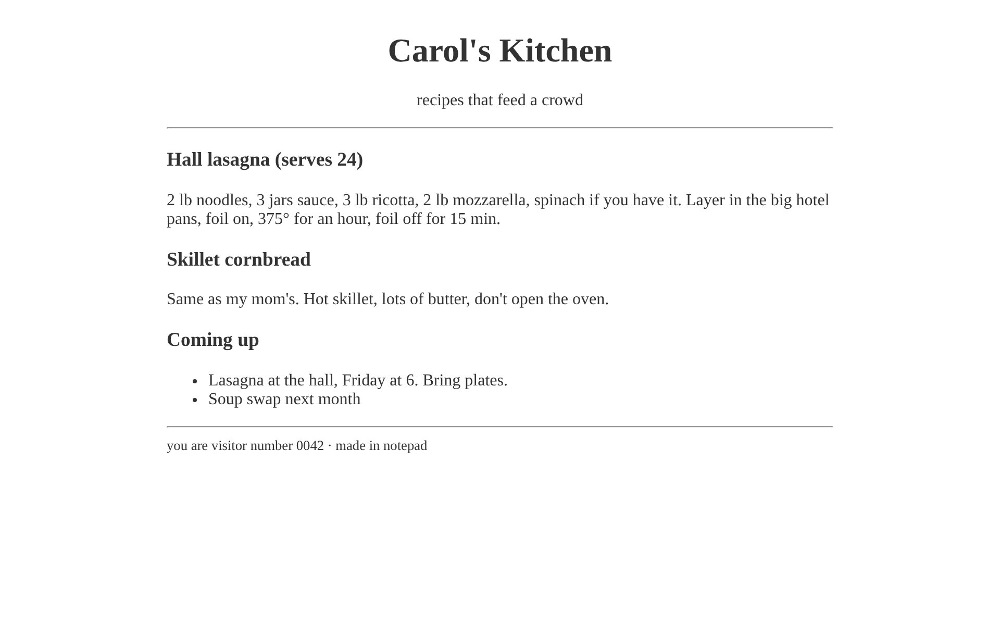
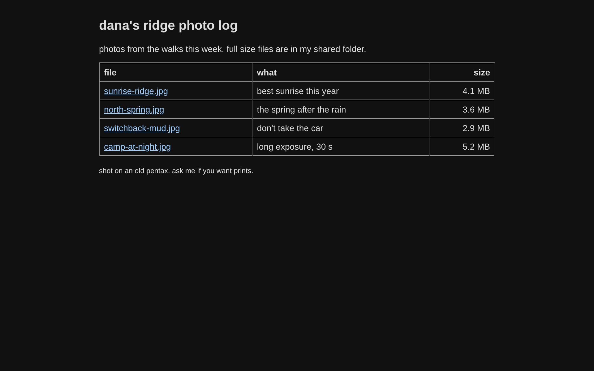

intraweb
your neighborhood web
A local intranet that needs no internet, no servers and no setup. Put one binary on a laptop or a Raspberry Pi, join the same Wi-Fi as everyone else, and you can see each other, visit each other's pages, swap files and send signed mail. Nodes find each other in about a second.
| Name | Fingerprint | Seen | Trust |
|---|
An example roster. The red row is a familiar name on a new key: it's called out, never merged. A ✓ means you compared fingerprints in person.
- Find Join the same Wi-Fi. Everyone announces a signed hello over mDNS and a broadcast beacon, so nodes see each other in about a second.
- Meet A hub, if there is one, keeps the roster: who's here and at what address. That's all it does.
- Connect Pages, mail and files go straight from your machine to theirs over HTTP. The hub never stores or relays anyone's content.
Two keys, never swapped
Ed25519 in identity.key is who you are and signs everything. An X25519 key derived from the same seed by HKDF is how a secret gets sealed to you. One file to back up, independent key material.
Nicknames are labels, keys are identity. There's no registry, so names can't be unique. A name that shows up on a new key is flagged in red, never quietly shown as a familiar face. Every key also draws its own picture, because people skim fingerprints and they notice a changed face.
Both paths, always
mDNS alone fails on networks that filter multicast. A UDP broadcast beacon alone gives up .local names. intraweb runs both. mDNS presence is edge-triggered and the beacon is a heartbeat, so each has its own way of deciding someone left.
Every announcement is signed and checked before it touches the database. Your own broadcast comes back to you and verifies, so it's dropped first. surf only listens: looking around must not change what the neighbors see.
One port, one protocol
Pages, mail and downloads all go over each node's own HTTP port, straight to the peer. Downloads resume for free because ranged requests already exist.
Mail is addressed by key. Type a nickname and it resolves, but if two keys answer to it the send stops and you choose. Mail to someone out of range waits in your outbox. An attachment is a signed reference to a file in your shared folder; the bytes stay with you until fetched.
Private means encrypted
Anyone with the Wi-Fi password can listen, so delivering only to members would be a promise the wire doesn't keep. Inviting someone seals the channel key to the X25519 key they announce. Private channels carry no attachments, because the shared folder is public.
A guestbook is a public channel whose address is derived from its owner's key, so anyone can work out where to sign.
A net is its log
A net is a group that governs itself: joins, motions and votes are signed posts in a channel, and the state is folded from them deterministically. Nothing else is stored, so no node can hold a version the log doesn't support.
Keys are free to mint, so a vote fixes its voters when it opens. Keys made afterwards count for nothing. The dashboard says plainly that keys made in advance still do.
intraweb only needs machines that can hear each other. No internet, and no router required.
The network you already have. Everyone runs one command and appears in about a second.
intraweb upLeave a Raspberry Pi on as the meeting place. People open intranet.local instead of an address.
intraweb up --hub --hub-name oakA Linux laptop makes the Wi-Fi itself. Everyone else joins it.
nmcli device wifi hotspot ssid intrawebPlug Ethernet straight between them. They give themselves addresses and find each other.
intraweb up # on bothA pocket access point on a battery bank for up to 10 devices. Phones get a page saying what to run.
hardware/esp32-apA hotspot with mobile data off, or a router with nothing in the internet port.
intraweb doctor # if nobody shows upAlready running a media server or another self-hosted app? It shows up as a button on your card for everyone in range, and opens straight from your machine. Nothing streams through intraweb.

C:\> intraweb library add Films 8096
C:\> intraweb libraries bob
The service must listen on your network and your firewall must allow its port. Only you can change your list or scan your own machine; a neighbor asking gets refused.

Around the neighborhood
Everyone's page is served from their own machine, straight to yours. These four were running on the nodes above.
http://192.0.2.2:8480/~alice/
http://192.0.2.2:8481/~bob/
http://192.0.2.2:8482/~carol/
http://192.0.2.2:8483/~dana/